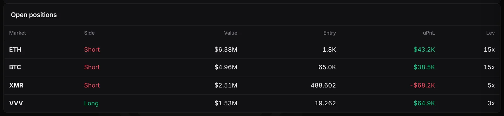

Influencer mk4 made $4.66 million in a week. The $13.4 million Zcash short is gone
DeepSea now ranks the KOL first on its 7-day board. A week ago mk4 held a big Zcash short; now it bets against ether, bitcoin and Monero and sits mostly in cash.

Key points
- DeepSea shows influencer mk4 up $4.66 million in 7 days, first on its KOL board, but only $30,100 over 30 days.
- The $13.41 million Zcash short we reported on November 9 no longer appears. Open now: ether short $6.38 million, bitcoin short $4.96 million, Monero short $2.51 million.
- Of $22.21 million in holdings, $20.56 million is USDC.
 What DeepSea's data shows
What DeepSea's data shows
DeepSea tracks the on-chain wallets of crypto influencers, or KOLs. Shortly after 6:35 a.m. ET on Monday its KOL board put mk4 first over seven days at +$4.66 million, ahead of 2 freres 2 fauves at +$1.89 million. The mk4 page shows one Hyperliquid wallet with +$30,100 over 30 days, +$14.57 million over 90 days and $156.81 million of volume.
Holdings are $22.21 million, of which $20.56 million is USDC. Open positions at 6:47 a.m. ET:
- Ether short: $6.38 million, 15x leverage, paper profit $43,200
- Bitcoin short: $4.96 million, 15x, entry near $65,000, paper profit $38,500
- Monero short: $2.51 million, 5x, entry $488.60, paper loss $68,200
- Venice (VVV) long: $1.53 million, 3x, entry $19.26, paper profit $64,900
About an hour before our check the page logged a burst of small ether sells, the largest 10.289 ETH ($18,600). DeepSea's risk check shows no flags for the wallet.

Data: DeepSea (desea.io), checked November 16, 2026, 6:47 a.m. ET.
What changed in a week
New to the tools? Read what DeepSea is.
On November 9, we reported mk4 at No. 2 with +$2.24 million for the week, minus $876,800 over 30 days, and a $13.41 million Zcash short. That short is no longer on the page, and the 30-day figure has turned slightly positive. DeepSea does not show when or at what price the Zcash bet closed.
The wallet also holds 3.29 million KNTQ, Kinetiq's token, which DeepSea values at $798,400. At CoinGecko's $0.2276 it would be worth about $749,000. Nine days ago the page logged two 1 million-unit sells of tokens whose names copy USDC with lookalike letters, with no dollar value shown.
Checking the numbers
We matched the positions with CoinGecko's Hyperliquid market data at 6:45 a.m. ET. Monero traded at $503.82, 3.1% above mk4's short entry, which fits the paper loss of 2.7% of the position. Venice traded at $20.20, 4.8% above the long entry, close to the 4.2% paper gain DeepSea shows. Small gaps come from rounding and the minutes between readings.
mk4's open positions
US$ million
Source: DeepSea, 6:47 a.m. ET, November 16, 2026

LC Insight analysis
This section is our reading of the facts above, not a statement of fact.
- We think most of the week's $4.66 million came from closing the Zcash short as Zcash fell, since the open bets carry only small paper gains.
- With $20.56 million in USDC and modest leverage, mk4 is taking far less risk than a week ago.
- A 30-day result near zero beside a 90-day gain of $14.57 million shows how swingy this trader's record is.
What's next
- Whether mk4 adds to the ether and bitcoin shorts
- The Monero short, now underwater
- Changes in mk4's KOL ranking next week
Disclaimer. This article is based on public information and the sources listed below as of the update time shown. It is for information only and is not investment, legal or tax advice. Figures may change as companies and authorities publish new data.